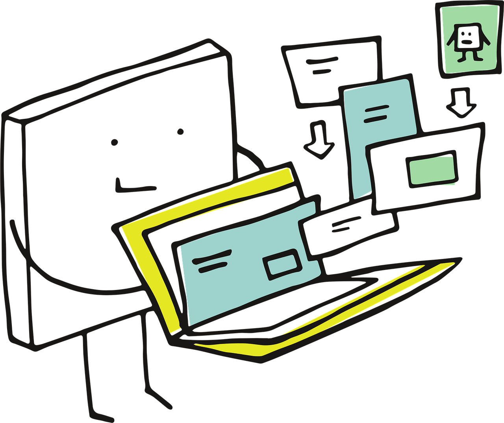

Course Roadmap
A core component of this course is what we refer to as the causal inference roadmap. This idea emerged during the group meetings and is based on the work of Petersen and Balzer (2014). Their course, titled Introduction to Causal Inference, originally included seven steps: (1) causal model, (2) counterfactuals and causal effects, (3) observed data, (4) identifiability, (5) estimation problem, (6) estimation, and (7) interpretation. However, we have adapted this structure into eight stages.

Note that the course lesson plan is aligned with the causal inference roadmap, progressing sequentially over thirteen weeks. This progression moves from formulating research questions to final storytelling, incorporating elements such as domain expertise, causal diagrams, counterfactual reasoning, and statistical models along the way.
The stages can be briefly described as follows:
- Research Question. Every causal analysis begins with a well-defined research question rooted in domain expertise, ensuring it is scientifically meaningful. This stage often requires iterative refinement with subject-matter collaborators to clarify the exposures, outcomes, confounders, and potential mediators involved.
- Causal Model Representing Existing Knowledge. The next step is to encode existing knowledge using a directed acyclic graph (DAG), ideally informed by literature and expert consultation. The DAG clarifies hypothesized dependencies and guides the identification of an appropriate study design—experimental, quasi-experimental, or observational—based on the underlying data-generating process.
- Counterfactuals and Causal Parameters. Causal inference relies on counterfactual reasoning, typically represented as potential outcomes, such as binary \(Y(0)\) versus \(Y(1)\). Researchers must determine which function of these counterfactuals, such as the average treatment effect (ATE) or the average treatment effect on the treated (ATT), best addresses the original research question, often formalized through structural causal models.
- Defining a Statistical Model. The causal parameter is then mapped to a statistical parameter, such as a regression coefficient or other estimand. Identifiability assumptions—including no unmeasured confounding and positivity—are essential to ensure that the statistical parameter accurately reflects the causal parameter.
- Model Fitting (Estimation). Researchers estimate causal effects using methods suited to the study design and data, such as inverse probability weighting or G-estimation.
- Interpretation. Estimated effects must be interpreted in light of the causal assumptions made. Sensitivity analyses and model diagnostics help evaluate the plausibility of these assumptions and assess the robustness of the conclusions drawn.
- Reporting. Findings should be reported transparently, adhering to scientific guidelines appropriate to the study design. Reporting includes not only point estimates of effects but also interval estimates, assumptions, limitations, and the rationale behind the analytical choices made.
- Storytelling. Finally, the results of causal inference must be presented through a coherent narrative that effectively communicates the significance of the findings to both technical and non-technical audiences. Storytelling emphasizes the importance of the research, the implications of the estimated effects, and how they contribute to scientific or policy discussions.